These layers build geometry from a model, a function, a field or a shape. This article gives a small example of each. Installation is covered in Get started. Layers covers points, paths, surfaces from gridded data, columns, distributions and intervals. Vector fields covers arrows and streamlines, and Implicit surfaces covers reconstruction from point clouds.
Indexed meshes
A mesh describes vertices and faces using integer indices. Indices start at one. Each row in the face matrix identifies the corners of a triangle or quadrilateral. The mesh constructor returns a corner table keyed by vertex, face and corner.
vertices <- data.frame(x = c(0, 1, 1, 0), y = c(0, 0, 1, 1),
z = c(0, 0, 1, 1))
mesh <- mesh_3d(vertices, matrix(1:4, nrow = 1))
ggplot() + geom_mesh_3d(data = mesh, fill = "#2E6F9E") + coord_3d()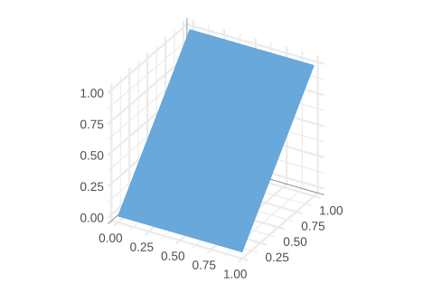
Function and fitted surfaces
Function surfaces sample a vectorized function of x and y. The grid is evenly spaced in transformed x and y coordinates. Function inputs and returned z values use original data units. The z scale transforms the returned heights.
ggplot() + geom_function_3d(fun = function(x, y) sin(x) * cos(y), n = 10) +
xlim(-2, 2) + ylim(-2, 2) + coord_3d()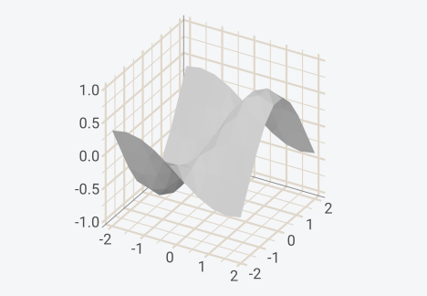
ggplot() + stat_function_3d(fun = function(x, y) x^2 + y^2, n = 10) +
xlim(-1, 1) + ylim(-1, 1) + coord_3d()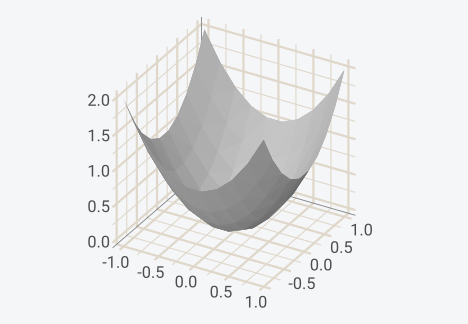
Fitted surfaces model z using x and y. Fitting and prediction use transformed positions. The linear model’s default formula is z as a function of x plus y. Confidence surfaces, when requested, describe pointwise uncertainty in the conditional mean.
fit_data <- expand.grid(x = seq(-2, 2, length.out = 10),
y = seq(-2, 2, length.out = 10))
fit_data$z <- with(fit_data, x + y + sin(3 * x * y) / 5)
f <- ggplot(fit_data, aes(x, y, z = z))
f + geom_smooth_3d(method = "lm", se = FALSE, n = 8) + coord_3d()
f + stat_smooth_3d(method = "lm", se = FALSE, n = 8) + coord_3d()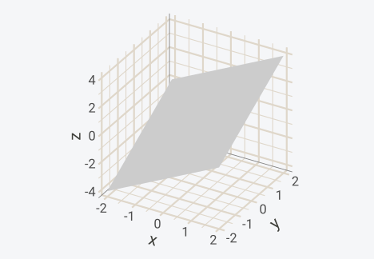
An existing model can supply predictions directly. Fit fuel consumption against weight and horsepower, then pass that model to both the surface and residual layers. The hull domain ends the surface at the convex hull of the observed x/y positions; residual segments join observations to predictions.
model <- lm(mpg ~ wt + hp, data = mtcars)
cars_fit <- ggplot(mtcars, aes(wt, hp, z = mpg))
cars_fit + geom_smooth_3d(method = model, domain = "hull", se = FALSE,
n = 10, fill = "#2E6F9E", alpha = 0.45) +
geom_residual_3d(method = model, colour = "#B5342B", linewidth = 0.7) +
geom_point_3d(size = 1.5) + coord_3d()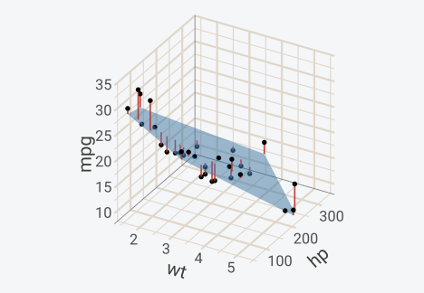
Models supplied as objects predict in original data units. Fitting functions, including custom functions passed as the method, fit transformed positions and use a formula in x, y and z. A model with additional predictors can fix them through the condition list; see geom_smooth_3d().
Colour can show prediction standard errors on the fitted surface. Confidence bounds can also be drawn as separate surfaces or a closed band. They describe pointwise uncertainty in the fitted mean.
cars_fit + geom_smooth_3d(method = model, domain = "hull", se = "fill", n = 10) +
scale_fill_gradient(low = "#DCEAF3", high = "#2E6F9E", name = "SE") +
coord_3d() + theme(legend.position = "right")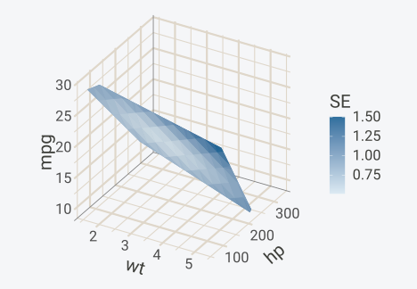
Use se = "band" to close the space between the
confidence surfaces. The following band uses the same fitted model and
predictor hull.
cars_fit + geom_smooth_3d(method = model, domain = "hull", se = "band",
n = 10, fill = "#2E6F9E", alpha = 0.45) +
geom_point_3d(size = 1.5) + coord_3d()
Displaying intervals and summaries covers supplied intervals and summaries of repeated observations.
Parametric surfaces
A parametric surface gives x, y and z as functions of two parameters
and
,
which reaches shapes that are not graphs of a function of x and y.
geom_parametric_3d() takes a function returning a list of
the three coordinates and samples it on an n grid;
closed joins the edges of a parameter that wraps around, as
both do for a torus.
torus <- function(u, v) list(x = (1 + 0.4 * cos(v)) * cos(u),
y = (1 + 0.4 * cos(v)) * sin(u), z = 0.4 * sin(v))
ggplot() +
geom_parametric_3d(fun = torus, n = c(36, 18), closed = TRUE, fill = "#2E6F9E") +
coord_3d(aspect = "data")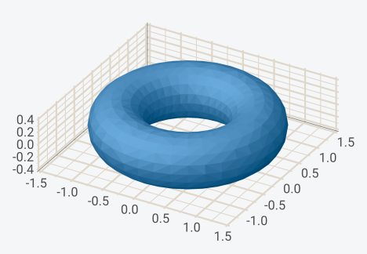
Meshes and intrinsic geometry draws geodesics on this torus, and Complex functions, knots and immersed surfaces uses parametric surfaces that pass through themselves.
Density surfaces and ridges
A bivariate density surface estimates how observations are distributed over x and y. Its height is density, computed with a Gaussian product kernel. The bandwidth controls smoothing along each input axis.
ggplot(faithful, aes(eruptions, waiting)) +
stat_density_2d_3d(n = 12) + coord_3d()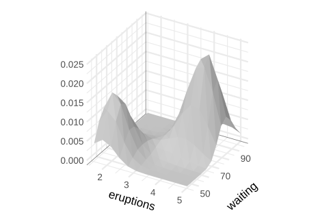
Ridgelines estimate a one-dimensional density for each group and place the groups along the perpendicular axis. Here each species occupies a single y position. Height multiplies the density in transformed z units.
r <- ggplot(iris, aes(Sepal.Length, as.numeric(Species),
group = Species, fill = Species))
r + geom_ridgeline_3d(n = 24) +
scale_fill_manual(values = c("#2E6F9E", "#9E5E0F", "#2A7A7A")) + coord_3d()
r + stat_ridgeline_3d(n = 24) +
scale_fill_manual(values = c("#2E6F9E", "#9E5E0F", "#2A7A7A")) + coord_3d()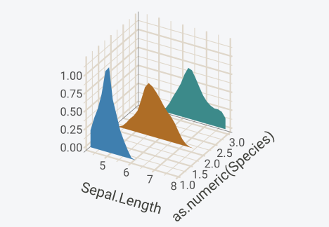
Scalar-field level surfaces
A scalar field assigns a numeric value to each x/y/z position. An
isosurface joins positions with the same field value. Supply a complete
rectilinear grid and map the field to value; missing field
values mask their incident cells.
field <- expand.grid(x = seq(-1, 1, length.out = 8),
y = seq(-1, 1, length.out = 8), z = seq(-1, 1, length.out = 8))
field$value <- with(field, x^2 + y^2 + z^2)
v <- ggplot(field, aes(x, y, z = z, value = value))
v + geom_isosurface_3d(levels = 0.6, fill = "#2E6F9E") + coord_3d()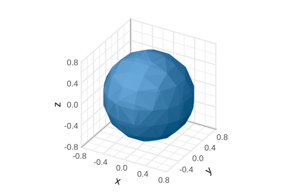
v + stat_isosurface_3d(levels = 0.6, fill = "#2E6F9E") + coord_3d()
A function can supply field values directly. It receives transformed coordinates in all three axes. Grid resolution sets how finely the function is sampled.
ball <- function(x, y, z) x^2 + y^2 + z^2
ggplot() + geom_isofunction_3d(fun = ball, n = 8, levels = 0.5) +
xlim(-1, 1) + ylim(-1, 1) + zlim(-1, 1) + coord_3d()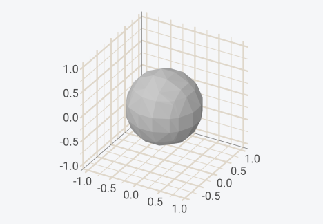
ggplot() + stat_isofunction_3d(fun = ball, n = 8, levels = 0.5) +
xlim(-1, 1) + ylim(-1, 1) + zlim(-1, 1) + coord_3d()
Slices through a scalar field
A level surface shows where a field takes one value. A slice shows
every value on a plane through it. geom_slice_3d() reads a
gridded field with a value aesthetic and colours planes
through it, by default the three planes through the middle of the grid;
xslice, yslice and zslice choose
others. geom_slice_contour_3d() adds contour lines on the
same planes.
field <- expand.grid(x = seq(-1, 1, length.out = 16),
y = seq(-1, 1, length.out = 16),
z = seq(-1, 1, length.out = 16))
field$value <- with(field, exp(-(x^2 + 2 * y^2 + z^2)))
ggplot(field, aes(x, y, z = z, value = value)) +
geom_slice_3d(zslice = 0) +
geom_slice_contour_3d(zslice = 0, bins = 6, colour = "white") +
scale_fill_gradient(low = "#C9D9E6", high = "#2E6F9E") + coord_3d()
stat_slice_3d(slice = sdf_plane(...)) cuts along an
oblique plane, and geom_density_slice_3d() slices the
density of a point cloud estimated on the fly.
Where two surfaces meet
geom_isocurve_3d() draws the curve where two implicit
surfaces intersect, the points at which both functions are zero. Here a
unit sphere meets a saddle.
ggplot() +
geom_isocurve_3d(fun1 = sdf_sphere(radius = 1),
fun2 = function(x, y, z) x^2 - y^2 - z * 0.5,
n = 24, colour = "#B5342B", linewidth = 1) +
xlim(-1.2, 1.2) + ylim(-1.2, 1.2) + zlim(-1.2, 1.2) + coord_3d()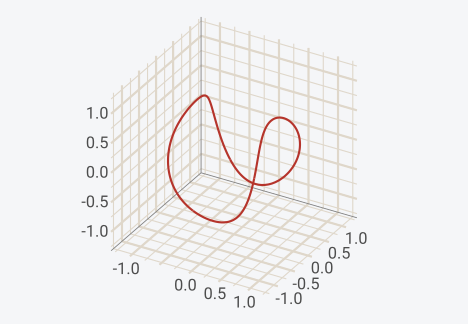
Trivariate density
A trivariate density estimates the distribution of observations in
three dimensions. Numeric levels select density thresholds. Probability
contents, given as probs, select enclosed mass estimated
from the sampled grid. The grid ranges need to include the density tails
for probability-content requests.
set.seed(4)
cloud <- data.frame(x = rnorm(40), y = rnorm(40), z = rnorm(40))
c <- ggplot(cloud, aes(x, y, z = z))
c + geom_isodensity_3d(h = 0.7, levels = 0.02, n = 8) + coord_3d()
c + stat_density_3d(h = 0.7, levels = 0.02, n = 8) + coord_3d()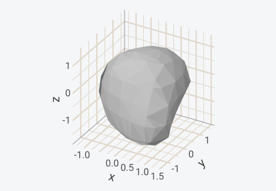
ggplot(cloud, aes(x, y, z = z)) +
stat_density_3d(h = 0.7, probs = c(0.5, 0.9), n = 12, alpha = 0.4) +
xlim(-4, 4) + ylim(-4, 4) + scale_z_continuous(limits = c(-4, 4)) + coord_3d()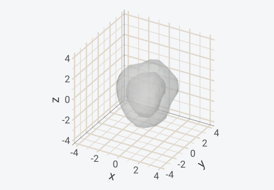
Convex hulls
A convex hull is the smallest convex shape containing the input positions. This example uses the eight corners of a cube. Coplanar input produces a planar polygon, and collinear input produces no faces.
corners <- expand.grid(x = 0:1, y = 0:1, z = 0:1)
h <- ggplot(corners, aes(x, y, z = z))
h + geom_hull_3d(fill = "#2E6F9E") + coord_3d()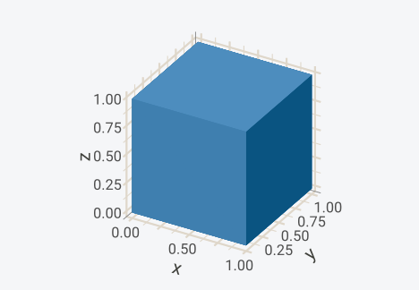
h + stat_hull_3d(fill = "#2E6F9E") + coord_3d()
Spheres, ellipsoids and glyphs
A sphere gives each observation a solid radius. The next table contains three centres and radii in data units. A data aspect ratio makes equal distances on the axes equally long in the scene.
solids <- data.frame(x = c(0, 2, 4), y = c(0, 1, 0), z = c(0, 1, 2),
radius = c(0.5, 0.8, 0.6))
ggplot(solids, aes(x, y, z = z, radius = radius)) +
geom_sphere_3d(detail = 1, fill = "#2E6F9E") + coord_3d(aspect = "data")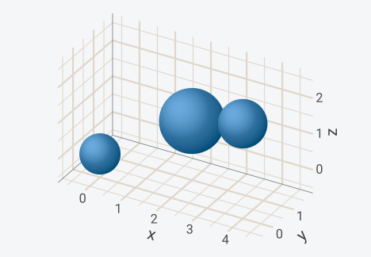
An ellipsoid takes three semi-axis lengths or a list-column of shape matrices. These lengths use transformed position units. Principal axes are visible through a translucent ellipsoid.
ggplot(solids, aes(x, y, z = z)) +
geom_ellipsoid_3d(rx = 0.7, ry = 0.3, rz = 0.5, detail = 1,
axes = TRUE, alpha = 0.4, fill = "#2A7A7A") +
coord_3d(aspect = "data")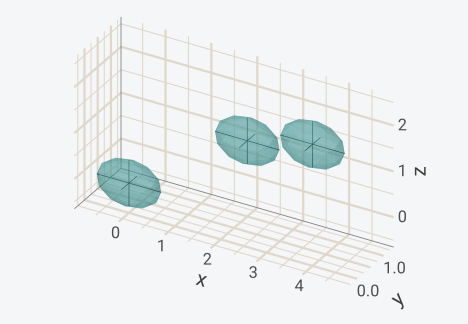
The ellipsoid stat estimates a shape from each group. In the iris data, a data ellipsoid describes the spread of flower measurements. A confidence ellipsoid describes uncertainty in the species mean; choose it with the standard-error kind and a normal covariance estimate.
iris_space <- ggplot(iris, aes(Sepal.Length, Sepal.Width, z = Petal.Length,
fill = Species, colour = Species))
iris_space + stat_ellipsoid_3d(type = "norm", kind = "data",
detail = 1, alpha = 0.2, axes = TRUE) +
geom_point_3d(size = 1) +
scale_fill_manual(values = c("#2E6F9E", "#9E5E0F", "#2A7A7A")) +
scale_colour_manual(values = c("#2E6F9E", "#9E5E0F", "#2A7A7A")) +
coord_3d()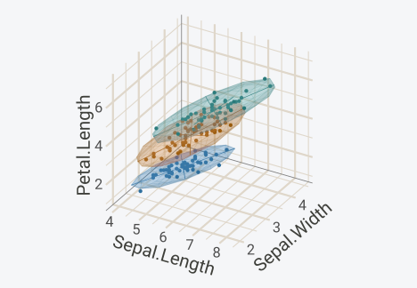
iris_space + stat_ellipsoid_3d(type = "norm", kind = "se", level = 0.95,
detail = 1, alpha = 0.4, axes = TRUE) +
geom_point_3d(size = 0.7) +
scale_fill_manual(values = c("#2E6F9E", "#9E5E0F", "#2A7A7A")) +
scale_colour_manual(values = c("#2E6F9E", "#9E5E0F", "#2A7A7A")) +
coord_3d()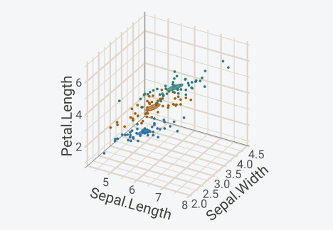
stat_ellipsoid_3d() also offers a t estimate that downweights outliers, Euclidean spheres and enclosing ellipsoids. Each group needs four or more points spanning three dimensions.
A glyph places a mesh at every observation. Built-in shapes include cubes, cones, cylinders, spheres and octahedra; a custom mesh can supply another shape. Here the cube width represents horsepower in the car data, with width measured in millimetres at the centre of the view.
ggplot(mtcars, aes(wt, mpg, z = qsec, size = hp)) +
geom_glyph_3d(glyph = "cube", fill = "#9E5E0F") + coord_3d()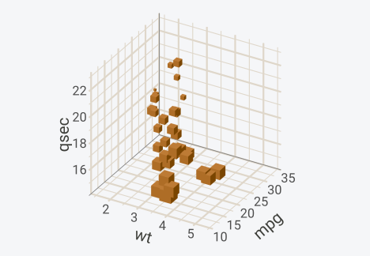
Tubes, ribbons and sweeps
A tube gives a path thickness in transformed data units. Sample a helix in row order and map radius to widen it gradually. Its circular cross-section follows the curve with a rotation-minimising frame, which controls its orientation along the path.
angle <- seq(0, 3 * pi, length.out = 40)
helix <- data.frame(x = cos(angle), y = sin(angle), z = angle / 4,
radius = seq(0.05, 0.14, length.out = length(angle)))
curve <- ggplot(helix, aes(x, y, z = z))
curve + geom_tube_3d(aes(radius = radius), sides = 8, cap = "flat",
fill = "#2E6F9E") + coord_3d(aspect = "data")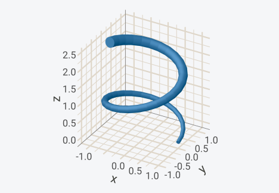
A ribbon sweeps a line segment along the same path. Its width and twist can vary at each position; twist is measured in degrees. The normal argument sets the initial orientation.
curve + geom_ribbon_3d(aes(twist = z * 60), width = 0.35,
normal = c(0, 0, 1), fill = "#9E5E0F") +
coord_3d(aspect = "data")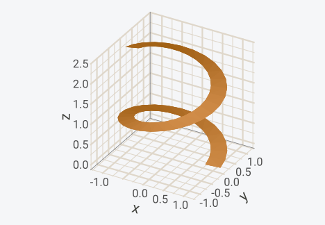
Supply a two-column polygon to sweep another cross-section. Its radius parameter scales the profile. Closed paths can close the seam, and a spline can interpolate a sparse set of path points before the sweep.
route <- data.frame(x = 0:4, y = c(0, 1, 0, -1, 0), z = c(0, 0.3, 1, 1.2, 2))
square <- rbind(c(-1, -1), c(1, -1), c(1, 1), c(-1, 1))
ggplot(route, aes(x, y, z = z)) +
geom_sweep_3d(profile = square, radius = 0.15, spline = "natural", n = 32,
fill = "#2A7A7A") + coord_3d(aspect = "data")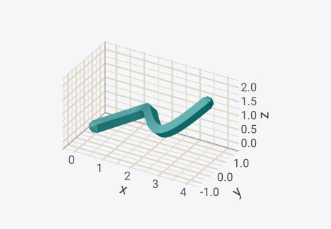
To draw the smooth path itself, use stat_spline_3d(). A surface of revolution rotates a radius-height profile about an axis.
vessel <- data.frame(z = seq(0, 2, length.out = 16))
vessel$r <- 0.5 + 0.2 * sin(3 * vessel$z)
ggplot(vessel, aes(r = r, z = z)) +
geom_revolve_3d(n = 16, fill = "#7A4F9E") + coord_3d(aspect = "data")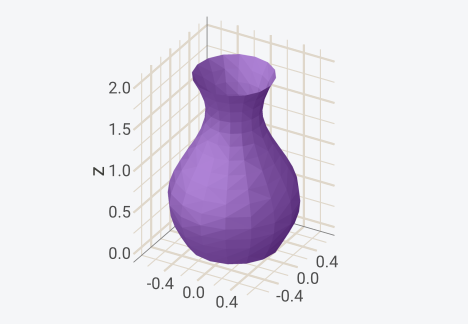